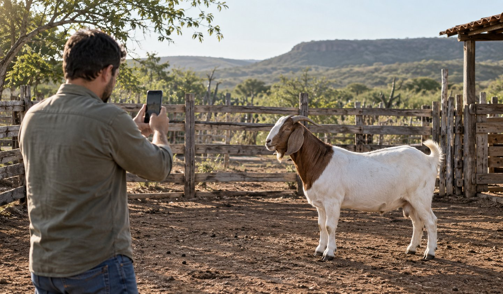
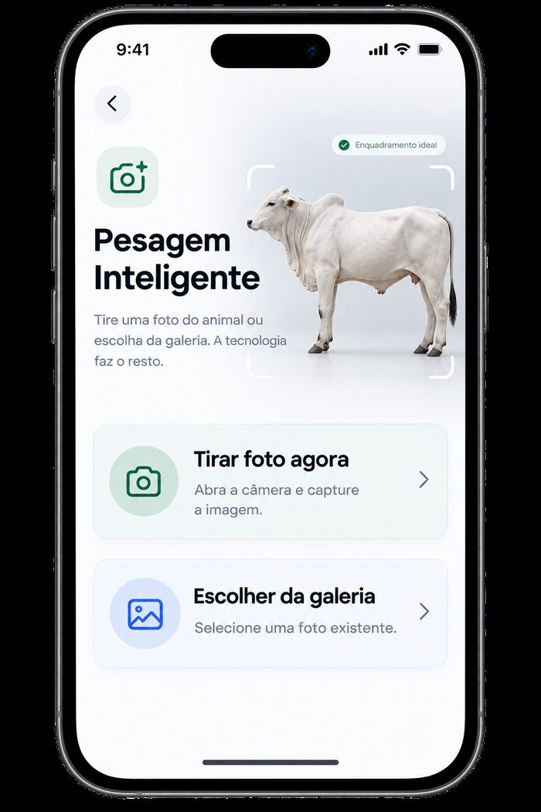

Pesagem inteligente por foto
Pese seu rebanho
com uma foto.
Pesagem inteligente
Aponte. Capture.
Receba o peso.
Tire uma foto do animal com o celular e receba uma estimativa do peso na hora, sem precisar de balança física.
- Sem balança física
- Bovinos, caprinos e ovinos
- Histórico de cada animal salvo automaticamente
Como funciona
Três passos até o peso estimado
Direto do celular, onde você estiver — no curral ou no pasto.
-
01
Fotografe o animal
Abra o Peso Fácil e tire uma foto do animal com a câmera do celular.
-
02
Receba a estimativa
O aplicativo calcula uma estimativa do peso a partir da imagem, sem precisar de balança física.
-
03
Registre e acompanhe
O peso fica salvo no histórico do animal para você acompanhar o desenvolvimento do rebanho.
Peso Fácil
Tecnologia que vira lucro.
- Estime o peso com uma foto, direto do celular e sem complicação.
- Sem balança física, sem fila e sem estresse para o animal.
- Acompanhe o histórico de peso de cada animal, pesagem após pesagem.

Depoimentos
Opinião dos nossos clientes
Uso o aplicativo do Peso Fácil no dia a dia e recomendo demais! A pesagem por foto é rápida e certeira, sem precisar de balança."
O aplicativo do Peso Fácil é sensacional! É só tirar uma foto do animal e já sei o peso na hora, sem complicação nenhuma."
Agora peso meu rebanho toda semana sem esforço nenhum. O aplicativo facilitou muito o meu dia a dia! Nunca imaginei que pesar seria tão fácil. Recomendo!
Dúvidas
Perguntas frequentes
Como funciona a pesagem por foto do Peso Fácil?
Você abre o aplicativo, tira uma foto do animal com o celular e o Peso Fácil gera uma estimativa do peso a partir da imagem. O resultado pode ser salvo no histórico do animal.
Preciso de balança para pesar meu rebanho?
Não. A pesagem inteligente é feita apenas com a câmera do celular, sem balança física. O resultado é uma estimativa de peso, útil para acompanhar o desenvolvimento do rebanho no dia a dia.
A pesagem por foto funciona para quais animais?
O Peso Fácil foi pensado para criadores de bovinos, caprinos e ovinos.
O aplicativo funciona sem internet?
O aplicativo foi feito para o dia a dia no campo e funciona mesmo sem internet. Se tiver dúvidas sobre algum recurso específico, chame a equipe no WhatsApp.
Como faço para começar a usar o Peso Fácil?
É só chamar a equipe no WhatsApp. Ela tira suas dúvidas e ajuda você a começar.